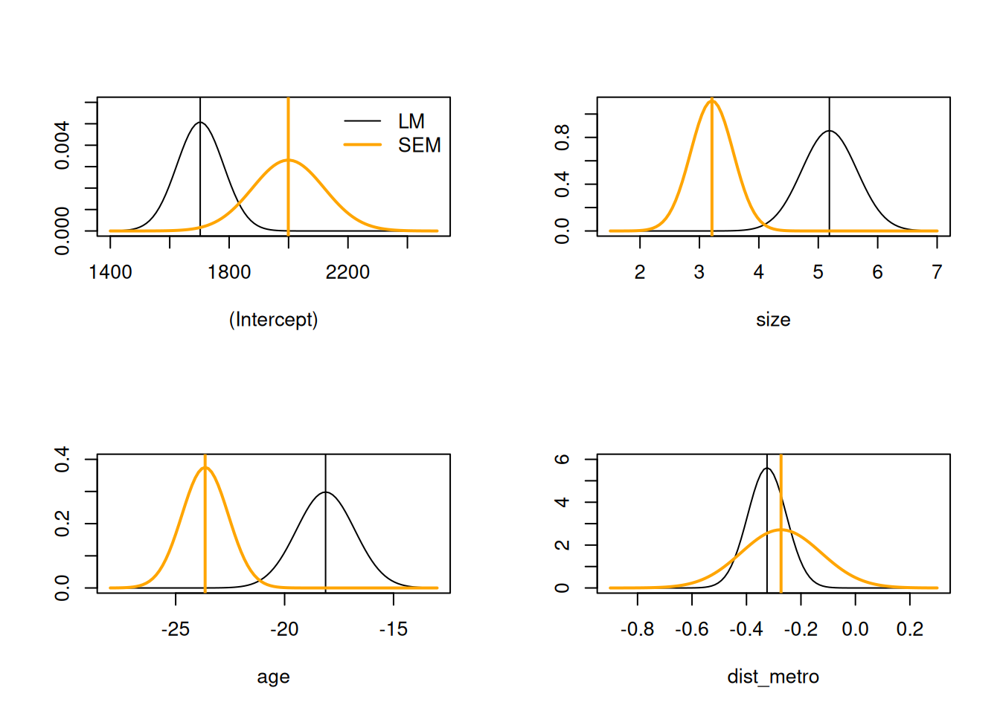
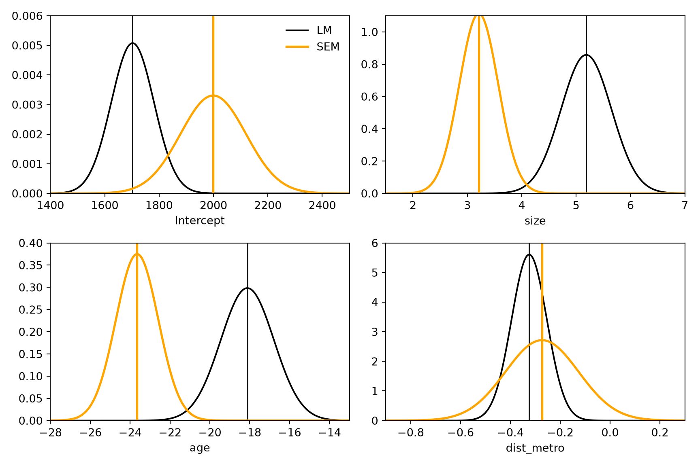

17 Spatial econometrics models
import warnings
import numpy as np
import pandas as pd
import geopandas as gpd
import statsmodels.formula.api as smf
import matplotlib.pyplot as plt
import spreg
from patsy import dmatrices
from scipy import optimize as so, sparse
from scipy.stats import chi2, norm
from scipy.spatial.distance import cdist
from libpysal import graph
warnings.filterwarnings("ignore")
# the objects of chapter 16 that are used here, recomputed from the exported data:
# properties_in_dd, f_pr, f_pr_md and the symmetrised k = 4 neighbours pr_nb_k4s
depmunic = gpd.read_file("data/athens_depmunic.gpkg")
properties = gpd.read_file("data/athens_properties.gpkg")
depmunic["popdens"] = depmunic["population"] / (10000 * depmunic["area"])
depmunic["foreigners"] = 100 * depmunic["pop_rest"] / depmunic["population"]
depmunic["prgreensp"] = depmunic["greensp"] / (10000 * depmunic["area"])
properties_in_dd = gpd.sjoin(properties, depmunic, how="left", predicate="within").sort_index()
f_pr = "prpsqm ~ size + age + dist_metro"
f_pr_md = f_pr + " + foreigners + prgreensp + popdens + museums + airbnb"
xy = np.column_stack([properties.geometry.x, properties.geometry.y])
D = cdist(xy, xy)
np.fill_diagonal(D, np.inf)
nn = np.argsort(D, axis=1, kind="stable")[:, :4] # ties between coincident points: row order
A = sparse.csr_matrix((np.ones(nn.size), (np.repeat(np.arange(len(xy)), 4), nn.ravel())),
shape=(len(xy), len(xy)))
pr_nb_k4s = graph.Graph.from_sparse(((A + A.T) > 0).astype(float), ids=properties["id"].to_numpy())Exercise 17.1
First create a spatial weights object from the k=4 symmetrized neighbour object:
library(spatialreg)
# Loading required package: Matrix
#
# Attaching package: 'spatialreg'
# The following objects are masked from 'package:spdep':
#
# get.ClusterOption, get.coresOption, get.mcOption,
# get.VerboseOption, get.ZeroPolicyOption,
# set.ClusterOption, set.coresOption, set.mcOption,
# set.VerboseOption, set.ZeroPolicyOption
lw <- spdep::nb2listw(pr_nb_k4s)lw = pr_nb_k4s.transform("r").to_W() # row-standardised spatial weights
Wd = lw.full()[0] # as a dense matrix, used below
Bk = (Wd > 0).astype(float) # binary neighbours
xn = ["size", "age", "dist_metro"] # f_pr
xm = xn + ["foreigners", "prgreensp", "popdens", "museums", "airbnb"] # f_pr_md
y = properties_in_dd["prpsqm"].to_numpy().reshape(-1, 1)
n = len(y)Fit a linear model to the lower-level data; all the included variables seem worth retaining:
LM_pr <- lm(f_pr, data=properties_in_dd)
summary(LM_pr)
#
# Call:
# lm(formula = f_pr, data = properties_in_dd)
#
# Residuals:
# Min 1Q Median 3Q Max
# -5691.2 -456.7 -202.2 251.9 6872.9
#
# Coefficients:
# Estimate Std. Error t value Pr(>|t|)
# (Intercept) 1702.61693 78.59752 21.66 < 2e-16 ***
# size 5.18681 0.46510 11.15 < 2e-16 ***
# age -18.11938 1.33737 -13.55 < 2e-16 ***
# dist_metro -0.32446 0.07115 -4.56 5.75e-06 ***
# ---
# Signif. codes: 0 '***' 0.001 '**' 0.01 '*' 0.05 '.' 0.1 ' ' 1
#
# Residual standard error: 792.2 on 996 degrees of freedom
# Multiple R-squared: 0.2368, Adjusted R-squared: 0.2345
# F-statistic: 103 on 3 and 996 DF, p-value: < 2.2e-16LM_pr = smf.ols(f_pr, data=properties_in_dd).fit()
LM_pr.summary()| Dep. Variable: | prpsqm | R-squared: | 0.237 |
|---|---|---|---|
| Model: | OLS | Adj. R-squared: | 0.234 |
| Method: | Least Squares | F-statistic: | 103.0 |
| Date: | Thu, 12 Nov 2026 | Prob (F-statistic): | 4.43e-58 |
| Time: | 14:50:13 | Log-Likelihood: | -8091.8 |
| No. Observations: | 1000 | AIC: | 1.619e+04 |
| Df Residuals: | 996 | BIC: | 1.621e+04 |
| Df Model: | 3 | ||
| Covariance Type: | nonrobust |
| coef | std err | t | P>|t| | [0.025 | 0.975] | |
|---|---|---|---|---|---|---|
| Intercept | 1702.6169 | 78.598 | 21.662 | 0.000 | 1548.381 | 1856.853 |
| size | 5.1868 | 0.465 | 11.152 | 0.000 | 4.274 | 6.099 |
| age | -18.1194 | 1.337 | -13.548 | 0.000 | -20.744 | -15.495 |
| dist_metro | -0.3245 | 0.071 | -4.560 | 0.000 | -0.464 | -0.185 |
| Omnibus: | 560.090 | Durbin-Watson: | 1.931 |
|---|---|---|---|
| Prob(Omnibus): | 0.000 | Jarque-Bera (JB): | 9453.575 |
| Skew: | 2.193 | Prob(JB): | 0.00 |
| Kurtosis: | 17.410 | Cond. No. | 2.23e+03 |
Notes:
[1] Standard Errors assume that the covariance matrix of the errors is correctly specified.
[2] The condition number is large, 2.23e+03. This might indicate that there are
strong multicollinearity or other numerical problems.
However, there is strong residual autocorrelation:
library(spdep)
lm.morantest(LM_pr, lw)
#
# Global Moran I for regression residuals
#
# data:
# model: lm(formula = f_pr, data = properties_in_dd)
# weights: lw
#
# Moran I statistic standard deviate = 26.039, p-value <
# 2.2e-16
# alternative hypothesis: greater
# sample estimates:
# Observed Moran I Expectation Variance
# 0.4872794374 -0.0023026155 0.0003535235def lm_morantest(model, B=Bk):
"""Moran's I test for linear model residuals (Cliff & Ord), one-sided
(alternative "greater"), like spdep::lm.morantest(); B: binary neighbours"""
y_, X = model.model.endog, model.model.exog
Wr = B / B.sum(1, keepdims=True); U = 0.5 * (Wr + Wr.T); N, p = X.shape
S0 = U.sum(); S1 = 0.5 * ((2 * U) ** 2).sum(); XtXinv = np.linalg.inv(X.T @ X)
u = y_ - X @ XtXinv @ X.T @ y_
I = N / S0 * (u @ U @ u) / (u @ u)
Z_ = U @ X; C3 = XtXinv @ (X.T @ Z_); trA = np.trace(C3)
EI = -(N * trA) / ((N - p) * S0)
VI = (N * N / (S0 * S0 * (N - p) * (N - p + 2))) * (
S1 + 2 * np.trace(C3 @ C3) - np.trace(4 * XtXinv @ (Z_.T @ Z_)) - 2 * trA ** 2 / (N - p))
z = (I - EI) / np.sqrt(VI)
return pd.Series(dict(I=I, expectation=EI, variance=VI, z=z, p_value=norm.sf(z)))
lm_morantest(LM_pr)
# I 4.872794e-01
# expectation -2.302615e-03
# variance 3.535235e-04
# z 2.603852e+01
# p_value 9.074047e-150
# dtype: float64Robust (adjusted) Lagrange multiplier tests (Rao’s score tests) suggest that the fitted model should include a spatial autoregressive process in the residuals, but not in the response:
if (packageVersion("spdep") < "1.3.3") {
spdep::lm.LMtests(LM_pr, lw, test=c("RLMerr", "RLMlag"))
} else {
spdep::lm.RStests(LM_pr, lw, test=c("adjRSerr", "adjRSlag"))
}
#
# Rao's score (a.k.a Lagrange multiplier) diagnostics for
# spatial dependence
#
# data:
# model: lm(formula = f_pr, data = properties_in_dd)
# test weights: lw
#
# adjRSerr = 150.88, df = 1, p-value < 2.2e-16
#
#
# Rao's score (a.k.a Lagrange multiplier) diagnostics for
# spatial dependence
#
# data:
# model: lm(formula = f_pr, data = properties_in_dd)
# test weights: lw
#
# adjRSlag = 1.2688, df = 1, p-value = 0.26def rs_tests(model, w=lw):
"""adjusted Rao score tests for spatial error and lag dependence (the robust LM tests
of Anselin et al.), via spreg's spatial diagnostics for OLS"""
o = spreg.OLS(model.model.endog.reshape(-1, 1), model.model.exog[:, 1:], # spreg adds the constant
w=w, spat_diag=True)
return pd.DataFrame({"statistic": [o.rlm_error[0], o.rlm_lag[0]],
"p_value": [o.rlm_error[1], o.rlm_lag[1]]}, index=["adjRSerr", "adjRSlag"])
rs_tests(LM_pr)
# statistic p_value
# adjRSerr 150.880381 1.113097e-34
# adjRSlag 1.268754 2.600006e-01Adding in the copied out municipality department level variables, we see that they do not seem to be worth retaining (unless there are good reasons for doing so); they do however improve model fit:
LM_pr_md <- lm(f_pr_md, data=properties_in_dd)
summary(LM_pr_md)
#
# Call:
# lm(formula = f_pr_md, data = properties_in_dd)
#
# Residuals:
# Min 1Q Median 3Q Max
# -5175.9 -371.6 -107.1 266.7 6648.1
#
# Coefficients:
# Estimate Std. Error t value Pr(>|t|)
# (Intercept) 1648.17176 189.84951 8.681 <2e-16 ***
# size 4.29551 0.43386 9.901 <2e-16 ***
# age -20.18585 1.27009 -15.893 <2e-16 ***
# dist_metro -0.15180 0.07159 -2.120 0.0342 *
# foreigners -38.13473 22.54311 -1.692 0.0910 .
# prgreensp 23.90080 16.33291 1.463 0.1437
# popdens -51.82590 103.65578 -0.500 0.6172
# museums -19.06125 21.27904 -0.896 0.3706
# airbnb 0.63284 0.32887 1.924 0.0546 .
# ---
# Signif. codes: 0 '***' 0.001 '**' 0.01 '*' 0.05 '.' 0.1 ' ' 1
#
# Residual standard error: 727.6 on 991 degrees of freedom
# Multiple R-squared: 0.3596, Adjusted R-squared: 0.3544
# F-statistic: 69.55 on 8 and 991 DF, p-value: < 2.2e-16LM_pr_md = smf.ols(f_pr_md, data=properties_in_dd).fit()
LM_pr_md.summary()| Dep. Variable: | prpsqm | R-squared: | 0.360 |
|---|---|---|---|
| Model: | OLS | Adj. R-squared: | 0.354 |
| Method: | Least Squares | F-statistic: | 69.55 |
| Date: | Thu, 12 Nov 2026 | Prob (F-statistic): | 1.22e-90 |
| Time: | 14:50:13 | Log-Likelihood: | -8004.1 |
| No. Observations: | 1000 | AIC: | 1.603e+04 |
| Df Residuals: | 991 | BIC: | 1.607e+04 |
| Df Model: | 8 | ||
| Covariance Type: | nonrobust |
| coef | std err | t | P>|t| | [0.025 | 0.975] | |
|---|---|---|---|---|---|---|
| Intercept | 1648.1718 | 189.850 | 8.681 | 0.000 | 1275.619 | 2020.725 |
| size | 4.2955 | 0.434 | 9.901 | 0.000 | 3.444 | 5.147 |
| age | -20.1859 | 1.270 | -15.893 | 0.000 | -22.678 | -17.693 |
| dist_metro | -0.1518 | 0.072 | -2.120 | 0.034 | -0.292 | -0.011 |
| foreigners | -38.1347 | 22.543 | -1.692 | 0.091 | -82.372 | 6.103 |
| prgreensp | 23.9008 | 16.333 | 1.463 | 0.144 | -8.150 | 55.952 |
| popdens | -51.8259 | 103.656 | -0.500 | 0.617 | -255.236 | 151.584 |
| museums | -19.0613 | 21.279 | -0.896 | 0.371 | -60.818 | 22.696 |
| airbnb | 0.6328 | 0.329 | 1.924 | 0.055 | -0.013 | 1.278 |
| Omnibus: | 554.617 | Durbin-Watson: | 1.960 |
|---|---|---|---|
| Prob(Omnibus): | 0.000 | Jarque-Bera (JB): | 11944.665 |
| Skew: | 2.078 | Prob(JB): | 0.00 |
| Kurtosis: | 19.414 | Cond. No. | 1.03e+04 |
Notes:
[1] Standard Errors assume that the covariance matrix of the errors is correctly specified.
[2] The condition number is large, 1.03e+04. This might indicate that there are
strong multicollinearity or other numerical problems.
The pre-test results are similar to those for the properties-only variables:
lm.morantest(LM_pr_md, lw)
#
# Global Moran I for regression residuals
#
# data:
# model: lm(formula = f_pr_md, data = properties_in_dd)
# weights: lw
#
# Moran I statistic standard deviate = 23.707, p-value <
# 2.2e-16
# alternative hypothesis: greater
# sample estimates:
# Observed Moran I Expectation Variance
# 0.4307327715 -0.0070398073 0.0003410046lm_morantest(LM_pr_md)
# I 4.307328e-01
# expectation -7.039807e-03
# variance 3.410046e-04
# z 2.370655e+01
# p_value 1.542988e-124
# dtype: float64and the LM tests continue to indicate an omitted spatial process in the residual rather than the response:
if (packageVersion("spdep") < "1.3.3") {
spdep::lm.LMtests(LM_pr_md, lw, test=c("RLMerr", "RLMlag"))
} else {
spdep::lm.RStests(LM_pr_md, lw, test=c("adjRSerr", "adjRSlag"))
}
#
# Rao's score (a.k.a Lagrange multiplier) diagnostics for
# spatial dependence
#
# data:
# model: lm(formula = f_pr_md, data = properties_in_dd)
# test weights: lw
#
# adjRSerr = 116.67, df = 1, p-value < 2.2e-16
#
#
# Rao's score (a.k.a Lagrange multiplier) diagnostics for
# spatial dependence
#
# data:
# model: lm(formula = f_pr_md, data = properties_in_dd)
# test weights: lw
#
# adjRSlag = 0.0035207, df = 1, p-value = 0.9527rs_tests(LM_pr_md)
# statistic p_value
# adjRSerr 116.674501 3.382676e-27
# adjRSlag 0.003521 9.526851e-01Exercise 17.2
We may update the formula for the properties-only model to include municipality department “fixed effects”, dummy variables:
LM_pr_fx <- lm(update(f_pr, . ~ . + num_dep), data=properties_in_dd)
summary(LM_pr_fx)
#
# Call:
# lm(formula = update(f_pr, . ~ . + num_dep), data = properties_in_dd)
#
# Residuals:
# Min 1Q Median 3Q Max
# -5175.3 -377.2 -97.9 272.7 6644.6
#
# Coefficients:
# Estimate Std. Error t value Pr(>|t|)
# (Intercept) 2.352e+03 9.816e+01 23.964 < 2e-16 ***
# size 4.295e+00 4.330e-01 9.919 < 2e-16 ***
# age -2.007e+01 1.269e+00 -15.819 < 2e-16 ***
# dist_metro -1.442e-01 7.154e-02 -2.015 0.044176 *
# num_dep2 -3.342e+02 8.695e+01 -3.844 0.000129 ***
# num_dep3 -4.896e+02 1.290e+02 -3.794 0.000157 ***
# num_dep4 -1.031e+03 1.193e+02 -8.641 < 2e-16 ***
# num_dep5 -8.222e+02 8.251e+01 -9.964 < 2e-16 ***
# num_dep6 -9.183e+02 7.861e+01 -11.681 < 2e-16 ***
# num_dep7 -6.527e+02 8.250e+01 -7.911 6.78e-15 ***
# ---
# Signif. codes: 0 '***' 0.001 '**' 0.01 '*' 0.05 '.' 0.1 ' ' 1
#
# Residual standard error: 726.2 on 990 degrees of freedom
# Multiple R-squared: 0.3627, Adjusted R-squared: 0.3569
# F-statistic: 62.6 on 9 and 990 DF, p-value: < 2.2e-16LM_pr_fx = smf.ols(f_pr + " + C(num_dep)", data=properties_in_dd).fit() # num_dep is a factor
LM_pr_fx.summary()| Dep. Variable: | prpsqm | R-squared: | 0.363 |
|---|---|---|---|
| Model: | OLS | Adj. R-squared: | 0.357 |
| Method: | Least Squares | F-statistic: | 62.60 |
| Date: | Thu, 12 Nov 2026 | Prob (F-statistic): | 9.86e-91 |
| Time: | 14:50:14 | Log-Likelihood: | -8001.7 |
| No. Observations: | 1000 | AIC: | 1.602e+04 |
| Df Residuals: | 990 | BIC: | 1.607e+04 |
| Df Model: | 9 | ||
| Covariance Type: | nonrobust |
| coef | std err | t | P>|t| | [0.025 | 0.975] | |
|---|---|---|---|---|---|---|
| Intercept | 2352.2451 | 98.156 | 23.964 | 0.000 | 2159.627 | 2544.863 |
| C(num_dep)[T.2] | -334.1747 | 86.945 | -3.844 | 0.000 | -504.793 | -163.557 |
| C(num_dep)[T.3] | -489.6327 | 129.038 | -3.794 | 0.000 | -742.851 | -236.414 |
| C(num_dep)[T.4] | -1030.9609 | 119.306 | -8.641 | 0.000 | -1265.082 | -796.840 |
| C(num_dep)[T.5] | -822.1614 | 82.512 | -9.964 | 0.000 | -984.080 | -660.243 |
| C(num_dep)[T.6] | -918.3015 | 78.615 | -11.681 | 0.000 | -1072.572 | -764.031 |
| C(num_dep)[T.7] | -652.7045 | 82.503 | -7.911 | 0.000 | -814.604 | -490.805 |
| size | 4.2951 | 0.433 | 9.919 | 0.000 | 3.445 | 5.145 |
| age | -20.0706 | 1.269 | -15.819 | 0.000 | -22.560 | -17.581 |
| dist_metro | -0.1441 | 0.072 | -2.015 | 0.044 | -0.285 | -0.004 |
| Omnibus: | 555.492 | Durbin-Watson: | 1.973 |
|---|---|---|---|
| Prob(Omnibus): | 0.000 | Jarque-Bera (JB): | 12129.118 |
| Skew: | 2.077 | Prob(JB): | 0.00 |
| Kurtosis: | 19.548 | Cond. No. | 5.71e+03 |
Notes:
[1] Standard Errors assume that the covariance matrix of the errors is correctly specified.
[2] The condition number is large, 5.71e+03. This might indicate that there are
strong multicollinearity or other numerical problems.
The pre-test output is similar to that for the models considered above:
spdep::lm.morantest(LM_pr_fx, lw)
#
# Global Moran I for regression residuals
#
# data:
# model: lm(formula = update(f_pr, . ~ . + num_dep), data =
# properties_in_dd)
# weights: lw
#
# Moran I statistic standard deviate = 23.611, p-value <
# 2.2e-16
# alternative hypothesis: greater
# sample estimates:
# Observed Moran I Expectation Variance
# 0.4268054149 -0.0079765936 0.0003390813lm_morantest(LM_pr_fx)
# I 4.268054e-01
# expectation -7.976594e-03
# variance 3.390813e-04
# z 2.361129e+01
# p_value 1.475658e-123
# dtype: float64if (packageVersion("spdep") < "1.3.3") {
spdep::lm.LMtests(LM_pr_fx, lw, test=c("RLMerr", "RLMlag"))
} else {
spdep::lm.RStests(LM_pr_fx, lw, test=c("adjRSerr", "adjRSlag"))
}
#
# Rao's score (a.k.a Lagrange multiplier) diagnostics for
# spatial dependence
#
# data:
# model: lm(formula = update(f_pr, . ~ . + num_dep), data =
# properties_in_dd)
# test weights: lw
#
# adjRSerr = 117.99, df = 1, p-value < 2.2e-16
#
#
# Rao's score (a.k.a Lagrange multiplier) diagnostics for
# spatial dependence
#
# data:
# model: lm(formula = update(f_pr, . ~ . + num_dep), data =
# properties_in_dd)
# test weights: lw
#
# adjRSlag = 0.030669, df = 1, p-value = 0.861rs_tests(LM_pr_fx)
# statistic p_value
# adjRSerr 117.994808 1.738425e-27
# adjRSlag 0.030669 8.609806e-01We may fit a regimes model, where separate regression coefficients are calculated for interactions between the municipality department dummies and the included variables; size and dist_metro only retian influence for municipality departments 1 and 2:
LM_pr_reg <- lm(update(f_pr, . ~ num_dep/(0 + .)), data=properties_in_dd)
summary(LM_pr_reg)
#
# Call:
# lm(formula = update(f_pr, . ~ num_dep/(0 + .)), data = properties_in_dd)
#
# Residuals:
# Min 1Q Median 3Q Max
# -2055.0 -328.6 -62.8 257.2 6353.5
#
# Coefficients:
# Estimate Std. Error t value Pr(>|t|)
# num_dep1 2366.55794 206.45952 11.463 < 2e-16 ***
# num_dep2 1114.08697 167.84304 6.638 5.29e-11 ***
# num_dep3 2095.07546 424.99044 4.930 9.68e-07 ***
# num_dep4 1351.29266 465.10378 2.905 0.003752 **
# num_dep5 1695.64352 234.29757 7.237 9.30e-13 ***
# num_dep6 1611.35873 167.16126 9.640 < 2e-16 ***
# num_dep7 1705.22449 176.18849 9.678 < 2e-16 ***
# num_dep1:size 1.36164 0.51169 2.661 0.007918 **
# num_dep2:size 14.62370 0.99848 14.646 < 2e-16 ***
# num_dep3:size 2.25680 4.50973 0.500 0.616886
# num_dep4:size 3.79360 4.56205 0.832 0.405864
# num_dep5:size 3.06546 1.93716 1.582 0.113872
# num_dep6:size 1.49313 1.33800 1.116 0.264724
# num_dep7:size 5.91935 1.37694 4.299 1.89e-05 ***
# num_dep1:age -6.83169 3.55084 -1.924 0.054651 .
# num_dep2:age -9.36978 3.07762 -3.044 0.002393 **
# num_dep3:age -18.07526 5.65924 -3.194 0.001449 **
# num_dep4:age -22.43736 5.03824 -4.453 9.43e-06 ***
# num_dep5:age -27.07143 2.71096 -9.986 < 2e-16 ***
# num_dep6:age -23.33611 2.34894 -9.935 < 2e-16 ***
# num_dep7:age -24.34731 2.65955 -9.155 < 2e-16 ***
# num_dep1:dist_metro -0.72509 0.21429 -3.384 0.000744 ***
# num_dep2:dist_metro -0.61219 0.17457 -3.507 0.000474 ***
# num_dep3:dist_metro -0.56261 0.52693 -1.068 0.285918
# num_dep4:dist_metro 0.02032 0.43294 0.047 0.962570
# num_dep5:dist_metro 0.10681 0.29026 0.368 0.712965
# num_dep6:dist_metro 0.05074 0.09829 0.516 0.605810
# num_dep7:dist_metro -0.14110 0.14727 -0.958 0.338274
# ---
# Signif. codes: 0 '***' 0.001 '**' 0.01 '*' 0.05 '.' 0.1 ' ' 1
#
# Residual standard error: 663.8 on 972 degrees of freedom
# Multiple R-squared: 0.8323, Adjusted R-squared: 0.8274
# F-statistic: 172.2 on 28 and 972 DF, p-value: < 2.2e-16# regimes: separate intercepts and coefficients for each municipality department
LM_pr_reg = smf.ols("prpsqm ~ C(num_dep) + C(num_dep):size + C(num_dep):age + C(num_dep):dist_metro",
data=properties_in_dd).fit()
LM_pr_reg.summary()| Dep. Variable: | prpsqm | R-squared: | 0.477 |
|---|---|---|---|
| Model: | OLS | Adj. R-squared: | 0.463 |
| Method: | Least Squares | F-statistic: | 32.85 |
| Date: | Thu, 12 Nov 2026 | Prob (F-statistic): | 3.72e-117 |
| Time: | 14:50:14 | Log-Likelihood: | -7902.7 |
| No. Observations: | 1000 | AIC: | 1.586e+04 |
| Df Residuals: | 972 | BIC: | 1.600e+04 |
| Df Model: | 27 | ||
| Covariance Type: | nonrobust |
| coef | std err | t | P>|t| | [0.025 | 0.975] | |
|---|---|---|---|---|---|---|
| Intercept | 2366.5579 | 206.460 | 11.463 | 0.000 | 1961.400 | 2771.716 |
| C(num_dep)[T.2] | -1252.4710 | 266.077 | -4.707 | 0.000 | -1774.622 | -730.320 |
| C(num_dep)[T.3] | -271.4825 | 472.485 | -0.575 | 0.566 | -1198.691 | 655.726 |
| C(num_dep)[T.4] | -1015.2653 | 508.868 | -1.995 | 0.046 | -2013.872 | -16.658 |
| C(num_dep)[T.5] | -670.9144 | 312.283 | -2.148 | 0.032 | -1283.742 | -58.087 |
| C(num_dep)[T.6] | -755.1992 | 265.647 | -2.843 | 0.005 | -1276.507 | -233.891 |
| C(num_dep)[T.7] | -661.3334 | 271.418 | -2.437 | 0.015 | -1193.967 | -128.700 |
| C(num_dep)[1]:size | 1.3616 | 0.512 | 2.661 | 0.008 | 0.357 | 2.366 |
| C(num_dep)[2]:size | 14.6237 | 0.998 | 14.646 | 0.000 | 12.664 | 16.583 |
| C(num_dep)[3]:size | 2.2568 | 4.510 | 0.500 | 0.617 | -6.593 | 11.107 |
| C(num_dep)[4]:size | 3.7936 | 4.562 | 0.832 | 0.406 | -5.159 | 12.746 |
| C(num_dep)[5]:size | 3.0655 | 1.937 | 1.582 | 0.114 | -0.736 | 6.867 |
| C(num_dep)[6]:size | 1.4931 | 1.338 | 1.116 | 0.265 | -1.133 | 4.119 |
| C(num_dep)[7]:size | 5.9193 | 1.377 | 4.299 | 0.000 | 3.217 | 8.621 |
| C(num_dep)[1]:age | -6.8317 | 3.551 | -1.924 | 0.055 | -13.800 | 0.137 |
| C(num_dep)[2]:age | -9.3698 | 3.078 | -3.044 | 0.002 | -15.409 | -3.330 |
| C(num_dep)[3]:age | -18.0753 | 5.659 | -3.194 | 0.001 | -29.181 | -6.970 |
| C(num_dep)[4]:age | -22.4374 | 5.038 | -4.453 | 0.000 | -32.324 | -12.550 |
| C(num_dep)[5]:age | -27.0714 | 2.711 | -9.986 | 0.000 | -32.391 | -21.751 |
| C(num_dep)[6]:age | -23.3361 | 2.349 | -9.935 | 0.000 | -27.946 | -18.727 |
| C(num_dep)[7]:age | -24.3473 | 2.660 | -9.155 | 0.000 | -29.566 | -19.128 |
| C(num_dep)[1]:dist_metro | -0.7251 | 0.214 | -3.384 | 0.001 | -1.146 | -0.305 |
| C(num_dep)[2]:dist_metro | -0.6122 | 0.175 | -3.507 | 0.000 | -0.955 | -0.270 |
| C(num_dep)[3]:dist_metro | -0.5626 | 0.527 | -1.068 | 0.286 | -1.597 | 0.471 |
| C(num_dep)[4]:dist_metro | 0.0203 | 0.433 | 0.047 | 0.963 | -0.829 | 0.870 |
| C(num_dep)[5]:dist_metro | 0.1068 | 0.290 | 0.368 | 0.713 | -0.463 | 0.676 |
| C(num_dep)[6]:dist_metro | 0.0507 | 0.098 | 0.516 | 0.606 | -0.142 | 0.244 |
| C(num_dep)[7]:dist_metro | -0.1411 | 0.147 | -0.958 | 0.338 | -0.430 | 0.148 |
| Omnibus: | 495.604 | Durbin-Watson: | 2.037 |
|---|---|---|---|
| Prob(Omnibus): | 0.000 | Jarque-Bera (JB): | 7406.587 |
| Skew: | 1.892 | Prob(JB): | 0.00 |
| Kurtosis: | 15.784 | Cond. No. | 1.44e+04 |
Notes:
[1] Standard Errors assume that the covariance matrix of the errors is correctly specified.
[2] The condition number is large, 1.44e+04. This might indicate that there are
strong multicollinearity or other numerical problems.
The pre-test results are now changed, with possible spatial processes in both residuals and response being indicated:
spdep::lm.morantest(LM_pr_reg, lw)
#
# Global Moran I for regression residuals
#
# data:
# model: lm(formula = update(f_pr, . ~ num_dep/(0 + .)), data
# = properties_in_dd)
# weights: lw
#
# Moran I statistic standard deviate = 18.521, p-value <
# 2.2e-16
# alternative hypothesis: greater
# sample estimates:
# Observed Moran I Expectation Variance
# 0.3198250101 -0.0139390950 0.0003247394lm_morantest(LM_pr_reg)
# I 3.198250e-01
# expectation -1.393910e-02
# variance 3.247394e-04
# z 1.852133e+01
# p_value 6.948283e-77
# dtype: float64if (packageVersion("spdep") < "1.3.3") {
spdep::lm.LMtests(LM_pr_reg, lw, test=c("RLMerr", "RLMlag"))
} else {
spdep::lm.RStests(LM_pr_reg, lw, test=c("adjRSerr", "adjRSlag"))
}
#
# Rao's score (a.k.a Lagrange multiplier) diagnostics for
# spatial dependence
#
# data:
# model: lm(formula = update(f_pr, . ~ num_dep/(0 + .)), data
# = properties_in_dd)
# test weights: lw
#
# adjRSerr = 40.873, df = 1, p-value = 1.625e-10
#
#
# Rao's score (a.k.a Lagrange multiplier) diagnostics for
# spatial dependence
#
# data:
# model: lm(formula = update(f_pr, . ~ num_dep/(0 + .)), data
# = properties_in_dd)
# test weights: lw
#
# adjRSlag = 19.055, df = 1, p-value = 1.27e-05rs_tests(LM_pr_reg)
# statistic p_value
# adjRSerr 40.872549 1.624876e-10
# adjRSlag 19.055312 1.269838e-05Exercise 17.3
Fitting models initially by maximum likelihood (GMM may also be used), we pre-compute the eigenvalues:
eigs <- eigenw(lw)# eigenvalues of the spatial weights matrix (real and complex), used by the ML fits below
eigs = np.linalg.eigvals(Wd)
(eigs.real.min(), eigs.real.max())
# (np.float64(-0.936973336565477), np.float64(1.0000000000000064))The strong residual autocorrelation is picked up by the spatial coefficient, but unfortunately the Hausman test shows strong mis-specification:
SEM_pr <- errorsarlm(f_pr, data=properties_in_dd, listw=lw, Durbin=FALSE,
control=list(pre_eig=eigs))
summary(SEM_pr, Hausman=TRUE)
#
# Call:
# errorsarlm(formula = f_pr, data = properties_in_dd, listw = lw,
# Durbin = FALSE, control = list(pre_eig = eigs))
#
# Residuals:
# Min 1Q Median 3Q Max
# -3214.224 -337.719 -75.561 196.920 5411.793
#
# Type: error
# Coefficients: (asymptotic standard errors)
# Estimate Std. Error z value Pr(>|z|)
# (Intercept) 1999.09195 120.70305 16.5621 < 2e-16
# size 3.21092 0.35840 8.9591 < 2e-16
# age -23.64759 1.06426 -22.2199 < 2e-16
# dist_metro -0.27302 0.14694 -1.8581 0.06315
#
# Lambda: 0.6927, LR test value: 459.76, p-value: < 2.22e-16
# Asymptotic standard error: 0.024179
# z-value: 28.649, p-value: < 2.22e-16
# Wald statistic: 820.74, p-value: < 2.22e-16
#
# Log likelihood: -7861.931 for error model
# ML residual variance (sigma squared): 354240, (sigma: 595.18)
# Number of observations: 1000
# Number of parameters estimated: 6
# AIC: 15736, (AIC for lm: 16194)
# Hausman test: -246.29, df: 4, p-value: < 2.22e-16def hausman_test(y_, X, W, lam, s2):
"""spatial Hausman test of OLS against the spatial error model, as spatialreg::Hausman.test().
Vo follows spatialreg's Hcov, which uses A A with A = (I - lambda W)^-1 (not A A'),
for which the statistic need not be positive"""
y_ = np.asarray(y_).ravel(); B = np.eye(len(y_)) - lam * W; A = np.linalg.inv(B)
R = np.linalg.inv(X.T @ X); Xs, ys = B @ X, B @ y_
d = R @ X.T @ y_ - np.linalg.solve(Xs.T @ Xs, Xs.T @ ys) # OLS minus SEM coefficients
Vo = s2 * (R @ X.T @ A @ A @ X @ R); Vs = s2 * np.linalg.inv(Xs.T @ Xs)
stat = float(d @ np.linalg.solve(Vo - Vs, d))
return pd.Series(dict(statistic=stat, df=len(d), p_value=chi2.sf(abs(stat), len(d))))
SEM_pr = spreg.ML_Error(y, properties_in_dd[xn].to_numpy(), w=lw, name_x=xn, name_y="prpsqm")
# ML_Error
print(SEM_pr.summary)
# REGRESSION RESULTS
# ------------------
#
# SUMMARY OF OUTPUT: ML SPATIAL ERROR (METHOD = full)
# ------------------------------------------------------------------------------------
# Data set : unknown
# Weights matrix : unknown
# Dependent Variable : prpsqm Number of Observations: 1000
# Mean dependent var : 1316.8929 Number of Variables : 4
# S.D. dependent var : 905.4979 Degrees of Freedom : 996
# Pseudo R-squared : 0.2107
# Log likelihood : -7861.9314
# Sigma-square ML : 354235.2577 Akaike info criterion : 15731.863
# S.E of regression : 595.1767 Schwarz criterion : 15751.494
#
# ------------------------------------------------------------------------------------
# Variable Coefficient Std.Error z-Statistic Probability
# ------------------------------------------------------------------------------------
# CONSTANT 1999.09195 120.70304 16.56207 0.00000
# size 3.21092 0.35840 8.95907 0.00000
# age -23.64759 1.06426 -22.21985 0.00000
# dist_metro -0.27302 0.14694 -1.85811 0.06315
# lambda 0.69270 0.02418 28.64853 0.00000
# ------------------------------------------------------------------------------------
# ================================ END OF REPORT =====================================
X_pr = np.column_stack([np.ones(n), properties_in_dd[xn].to_numpy()])
hausman_test(y, X_pr, Wd, SEM_pr.lam, SEM_pr.sig2[0, 0])
# statistic -2.462895e+02
# df 4.000000e+00
# p_value 4.100512e-52
# dtype: float64The Hausman test compares the OLS and SEM coefficient estimates and their standard errors, assessing whether their distributions overlap sufficiently to suggest the absence of major mis-specification:
LM_coefs = pd.DataFrame({"Estimate": LM_pr.params, "Std. Error": LM_pr.bse,
"t value": LM_pr.tvalues, "Pr(>|t|)": LM_pr.pvalues})
LM_coefs
# Estimate Std. Error t value Pr(>|t|)
# Intercept 1702.616927 78.597521 21.662476 1.432984e-85
# size 5.186807 0.465099 11.152049 2.679763e-27
# age -18.119383 1.337375 -13.548472 1.662323e-38
# dist_metro -0.324459 0.071152 -4.560068 5.749564e-06SEM_coefs = pd.DataFrame({"Estimate": SEM_pr.betas[:-1, 0], "Std. Error": SEM_pr.std_err[:-1],
"z value": [z for z, _ in SEM_pr.z_stat[:-1]],
"Pr(>|z|)": [p_ for _, p_ in SEM_pr.z_stat[:-1]]},
index=["Intercept"] + xn)
SEM_coefs
# Estimate Std. Error z value Pr(>|z|)
# Intercept 1999.091950 120.703045 16.562067 1.310140e-61
# size 3.210921 0.358399 8.959070 3.274290e-19
# age -23.647592 1.064255 -22.219854 2.207878e-109
# dist_metro -0.273023 0.146936 -1.858108 6.315361e-02The tables are harder to read than the figure, which shows that the coefficient estimates do differ a lot for two variables, somewhat for the intercept, and little for one variable, but where the ML standard error estimate under usual assumptions crosses zero:
opar <- par(mfrow=c(2,2))
plot(1, type="n", xlim=c(1400, 2500), ylim=c(0, 0.006), xlab=rownames(LM_coefs)[1], ylab="")
curve(dnorm(x, mean=LM_coefs[1,1], sd=LM_coefs[1,2]), add=TRUE)
abline(v=LM_coefs[1,1])
abline(v=SEM_coefs[1,1], lwd=2, col="orange")
curve(dnorm(x, mean=SEM_coefs[1,1], sd=SEM_coefs[1,2]), add=TRUE, col="orange", lwd=2)
legend("topright", legend=c("LM", "SEM"), col=c("black", "orange"), lwd=1:2, bty="n")
plot(1, type="n", xlim=c(1.5, 7), ylim=c(0, 1.1), xlab=rownames(LM_coefs)[2], ylab="")
curve(dnorm(x, mean=LM_coefs[2,1], sd=LM_coefs[2,2]), add=TRUE)
abline(v=LM_coefs[2,1])
abline(v=SEM_coefs[2,1], lwd=2, col="orange")
curve(dnorm(x, mean=SEM_coefs[2,1], sd=SEM_coefs[2,2]), add=TRUE, col="orange", lwd=2)
plot(1, type="n", xlim=c(-28, -13), ylim=c(0, 0.4), xlab=rownames(LM_coefs)[3], ylab="")
curve(dnorm(x, mean=LM_coefs[3,1], sd=LM_coefs[3,2]), add=TRUE)
abline(v=LM_coefs[3,1])
abline(v=SEM_coefs[3,1], lwd=2, col="orange")
curve(dnorm(x, mean=SEM_coefs[3,1], sd=SEM_coefs[3,2]), add=TRUE, col="orange", lwd=2)
plot(1, type="n", xlim=c(-0.9, 0.3), ylim=c(0, 6), xlab=rownames(LM_coefs)[4], ylab="")
curve(dnorm(x, mean=LM_coefs[4,1], sd=LM_coefs[4,2]), add=TRUE)
abline(v=LM_coefs[4,1])
abline(v=SEM_coefs[4,1], lwd=2, col="orange")
curve(dnorm(x, mean=SEM_coefs[4,1], sd=SEM_coefs[4,2]), add=TRUE, col="orange", lwd=2)
par(opar)limits = [((1400, 2500), 0.006), ((1.5, 7), 1.1), ((-28, -13), 0.4), ((-0.9, 0.3), 6)]
fig, axes = plt.subplots(2, 2, figsize=(9, 6))
for i, (ax, ((lo, hi), top)) in enumerate(zip(axes.ravel(), limits)):
g = np.linspace(lo, hi, 400)
m1, s1 = LM_coefs.iloc[i, 0], LM_coefs.iloc[i, 1]
m2, s2_ = SEM_coefs.iloc[i, 0], SEM_coefs.iloc[i, 1]
ax.plot(g, norm.pdf(g, m1, s1), color="black", label="LM")
ax.axvline(m1, color="black", lw=1)
ax.plot(g, norm.pdf(g, m2, s2_), color="orange", lw=2, label="SEM")
ax.axvline(m2, color="orange", lw=2)
ax.set(xlim=(lo, hi), ylim=(0, top), xlabel=LM_coefs.index[i])
axes[0, 0].legend(loc="upper right", frameon=False)
plt.tight_layout()
plt.show()
The Hausman test also suggests mis-specification for the SEM model augmented with the municipality department level variables:
SEM_pr_md <- errorsarlm(f_pr_md, data=properties_in_dd, listw=lw, Durbin=FALSE,
control=list(pre_eig=eigs))
summary(SEM_pr_md, Hausman=TRUE)
#
# Call:
# errorsarlm(formula = f_pr_md, data = properties_in_dd, listw = lw,
# Durbin = FALSE, control = list(pre_eig = eigs))
#
# Residuals:
# Min 1Q Median 3Q Max
# -3421.923 -320.793 -65.301 224.785 5452.101
#
# Type: error
# Coefficients: (asymptotic standard errors)
# Estimate Std. Error z value Pr(>|z|)
# (Intercept) 1945.79330 333.00265 5.8432 5.121e-09
# size 3.05839 0.35711 8.5643 < 2.2e-16
# age -23.45168 1.06301 -22.0616 < 2.2e-16
# dist_metro -0.14969 0.13214 -1.1328 0.2573
# foreigners -7.66310 42.72513 -0.1794 0.8577
# prgreensp 38.40538 31.36427 1.2245 0.2208
# popdens -211.52190 190.49687 -1.1104 0.2668
# museums -33.84713 39.33249 -0.8605 0.3895
# airbnb 0.59183 0.60062 0.9854 0.3244
#
# Lambda: 0.62414, LR test value: 335.94, p-value: < 2.22e-16
# Asymptotic standard error: 0.028289
# z-value: 22.063, p-value: < 2.22e-16
# Wald statistic: 486.78, p-value: < 2.22e-16
#
# Log likelihood: -7836.138 for error model
# ML residual variance (sigma squared): 345330, (sigma: 587.65)
# Number of observations: 1000
# Number of parameters estimated: 11
# AIC: 15694, (AIC for lm: 16028)
# Hausman test: -1348.4, df: 9, p-value: < 2.22e-16X_md = np.column_stack([np.ones(n), properties_in_dd[xm].to_numpy()])
SEM_pr_md = spreg.ML_Error(y, properties_in_dd[xm].to_numpy(), w=lw, name_x=xm, name_y="prpsqm")
# ML_Error
print(SEM_pr_md.summary)
# REGRESSION RESULTS
# ------------------
#
# SUMMARY OF OUTPUT: ML SPATIAL ERROR (METHOD = full)
# ------------------------------------------------------------------------------------
# Data set : unknown
# Weights matrix : unknown
# Dependent Variable : prpsqm Number of Observations: 1000
# Mean dependent var : 1316.8929 Number of Variables : 9
# S.D. dependent var : 905.4979 Degrees of Freedom : 991
# Pseudo R-squared : 0.3464
# Log likelihood : -7836.1379
# Sigma-square ML : 345327.8405 Akaike info criterion : 15690.276
# S.E of regression : 587.6460 Schwarz criterion : 15734.446
#
# ------------------------------------------------------------------------------------
# Variable Coefficient Std.Error z-Statistic Probability
# ------------------------------------------------------------------------------------
# CONSTANT 1945.79329 333.00264 5.84318 0.00000
# size 3.05839 0.35711 8.56432 0.00000
# age -23.45168 1.06301 -22.06162 0.00000
# dist_metro -0.14969 0.13214 -1.13276 0.25732
# foreigners -7.66310 42.72513 -0.17936 0.85766
# prgreensp 38.40538 31.36427 1.22449 0.22077
# popdens -211.52189 190.49686 -1.11037 0.26684
# museums -33.84713 39.33249 -0.86054 0.38949
# airbnb 0.59183 0.60062 0.98537 0.32444
# lambda 0.62414 0.02829 22.06311 0.00000
# ------------------------------------------------------------------------------------
# ================================ END OF REPORT =====================================
hausman_test(y, X_md, Wd, SEM_pr_md.lam, SEM_pr_md.sig2[0, 0])
# statistic -1.348387e+03
# df 9.000000e+00
# p_value 1.093316e-284
# dtype: float64Extending to the SDEM models, and reporting impacts:
SDEM_pr <- errorsarlm(f_pr, data=properties_in_dd, listw=lw, Durbin=TRUE,
control=list(pre_eig=eigs))
summary(impacts(SDEM_pr), short=TRUE, zstats=TRUE)
# Impact measures (SDEM, glht, n):
# Direct Indirect Total
# size dy/dx 3.4445402 2.0126058 5.4571460
# age dy/dx -21.9222898 10.9931411 -10.9291487
# dist_metro dy/dx 0.2000411 -0.5494199 -0.3493789
# ========================================================
# Standard errors:
# Direct Indirect Total
# size dy/dx 0.3983375 1.0053504 1.2310345
# age dy/dx 1.1425638 2.5191829 3.1162005
# dist_metro dy/dx 0.2734082 0.3104821 0.1551602
# ========================================================
# Z-values:
# Direct Indirect Total
# size dy/dx 8.647291 2.001895 4.432976
# age dy/dx -19.186928 4.363772 -3.507203
# dist_metro dy/dx 0.731657 -1.769570 -2.251730
#
# p-values:
# Direct Indirect Total
# size dy/dx < 2e-16 0.045296 9.2941e-06
# age dy/dx < 2e-16 1.2784e-05 0.00045284
# dist_metro dy/dx 0.46438 0.076799 0.02433931def impacts_slx(coef, cov, names, kx):
"""direct (own), indirect (lagged X) and total impacts of SLX and SDEM models, with standard
errors from the coefficient covariance (the "glht" impacts of spatialreg)"""
rows = []
for j, nm in enumerate(names):
i_b, i_t = 1 + j, 1 + kx + j
b, t = coef[i_b], coef[i_t]
v_b, v_t, c = cov[i_b, i_b], cov[i_t, i_t], cov[i_b, i_t]
rows.append(dict(variable=nm, direct=b, indirect=t, total=b + t,
se_direct=v_b ** .5, se_indirect=v_t ** .5, se_total=(v_b + v_t + 2 * c) ** .5))
out = pd.DataFrame(rows).set_index("variable")
for c in ["direct", "indirect", "total"]:
out["z_" + c] = out[c] / out["se_" + c]
out["p_" + c] = 2 * norm.sf(abs(out["z_" + c]))
return out
# Durbin = TRUE: spreg's slx_lags = 1 adds the spatially lagged X variables
SDEM_pr = spreg.ML_Error(y, properties_in_dd[xn].to_numpy(), w=lw, slx_lags=1,
name_x=xn, name_y="prpsqm")
# ML_Error
impacts_slx(SDEM_pr.betas.ravel()[:-1], SDEM_pr.vm[:-1, :-1], xn, len(xn))
# direct indirect ... z_total p_total
# variable ...
# size 3.444540 2.012606 ... 4.432976 0.000009
# age -21.922290 10.993141 ... -3.507203 0.000453
# dist_metro 0.200041 -0.549420 ... -2.251731 0.024339
#
# [3 rows x 12 columns]we have Hausman test results still indicating strong mis-specification:
Hausman.test(SDEM_pr)
#
# Spatial Hausman test (asymptotic)
#
# data: NULL
# Hausman test = 53.765, df = 7, p-value = 2.618e-09def augmented(names): # intercept, X and the spatially lagged X
Xv = properties_in_dd[names].to_numpy()
return np.column_stack([np.ones(n), Xv, Wd @ Xv])
hausman_test(y, augmented(xn), Wd, SDEM_pr.lam, SDEM_pr.sig2[0, 0])
# statistic 5.376459e+01
# df 7.000000e+00
# p_value 2.618011e-09
# dtype: float64The same applies to the properties variables augmented with the municipality department level variables:
SDEM_pr_md <- errorsarlm(f_pr_md, data=properties_in_dd, listw=lw, Durbin=TRUE,
control=list(pre_eig=eigs))
summary(impacts(SDEM_pr_md), short=TRUE, zstats=TRUE)
# Impact measures (SDEM, glht, n):
# Direct Indirect Total
# size dy/dx 3.2902831 1.6915616 4.9818447
# age dy/dx -22.5877018 7.0789017 -15.5088001
# dist_metro dy/dx 0.2706259 -0.4643729 -0.1937470
# foreigners dy/dx 107.6194778 -146.8457502 -39.2262724
# prgreensp dy/dx 35.3436535 -12.5353745 22.8082790
# popdens dy/dx -456.7261733 400.0782218 -56.6479515
# museums dy/dx 51.9819803 -93.3777537 -41.3957735
# airbnb dy/dx -0.8658815 1.7162902 0.8504087
# ========================================================
# Standard errors:
# Direct Indirect Total
# size dy/dx 0.3900357 0.9742177 1.1837951
# age dy/dx 1.1250931 2.5043048 3.0554699
# dist_metro dy/dx 0.2747535 0.3097415 0.1459340
# foreigners dy/dx 87.2520044 94.9604412 45.6522640
# prgreensp dy/dx 74.3147385 79.3194509 33.1282694
# popdens dy/dx 403.5523912 439.7109657 210.7386006
# museums dy/dx 85.7152279 93.9719231 43.7578221
# airbnb dy/dx 1.1452242 1.2862740 0.6730806
# ========================================================
# Z-values:
# Direct Indirect Total
# size dy/dx 8.4358511 1.7363281 4.2083672
# age dy/dx -20.0762964 2.8266934 -5.0757496
# dist_metro dy/dx 0.9849770 -1.4992275 -1.3276345
# foreigners dy/dx 1.2334327 -1.5463887 -0.8592405
# prgreensp dy/dx 0.4755941 -0.1580366 0.6884839
# popdens dy/dx -1.1317643 0.9098664 -0.2688067
# museums dy/dx 0.6064498 -0.9936772 -0.9460200
# airbnb dy/dx -0.7560803 1.3343115 1.2634575
#
# p-values:
# Direct Indirect Total
# size dy/dx < 2e-16 0.0825058 2.5722e-05
# age dy/dx < 2e-16 0.0047031 3.8597e-07
# dist_metro dy/dx 0.32464 0.1338146 0.18430
# foreigners dy/dx 0.21741 0.1220107 0.39021
# prgreensp dy/dx 0.63436 0.8744280 0.49115
# popdens dy/dx 0.25773 0.3628930 0.78808
# museums dy/dx 0.54422 0.3203801 0.34414
# airbnb dy/dx 0.44960 0.1821018 0.20642SDEM_pr_md = spreg.ML_Error(y, properties_in_dd[xm].to_numpy(), w=lw, slx_lags=1,
name_x=xm, name_y="prpsqm")
# ML_Error
impacts_slx(SDEM_pr_md.betas.ravel()[:-1], SDEM_pr_md.vm[:-1, :-1], xm, len(xm))
# direct indirect ... z_total p_total
# variable ...
# size 3.290283 1.691562 ... 4.208367 2.572226e-05
# age -22.587702 7.078902 ... -5.075750 3.859713e-07
# dist_metro 0.270626 -0.464373 ... -1.327635 1.842989e-01
# foreigners 107.619478 -146.845750 ... -0.859240 3.902079e-01
# prgreensp 35.343653 -12.535374 ... 0.688484 4.911481e-01
# popdens -456.726173 400.078221 ... -0.268807 7.880784e-01
# museums 51.981980 -93.377754 ... -0.946020 3.441384e-01
# airbnb -0.865881 1.716290 ... 1.263457 2.064248e-01
#
# [8 rows x 12 columns]Hausman.test(SDEM_pr_md)
#
# Spatial Hausman test (asymptotic)
#
# data: NULL
# Hausman test = 229.24, df = 17, p-value < 2.2e-16hausman_test(y, augmented(xm), Wd, SDEM_pr_md.lam, SDEM_pr_md.sig2[0, 0])
# statistic 2.292409e+02
# df 1.700000e+01
# p_value 3.526600e-39
# dtype: float64Reaching out to the SLX models does not help, because although - as with the SDEM models - the indirect impacts (coefficients on lagged \(X\) variables) are large, so including lagged \(X\) variables especially at the properties level seems sensible, there is serious residual autocorrelation, and now the pre-test strategy points to a missing spatial process in the response:
SLX_pr <- lmSLX(f_pr, data=properties_in_dd, listw=lw, Durbin=TRUE)
summary(impacts(SLX_pr), short=TRUE, zstats=TRUE)
# Impact measures (SlX, glht, n-k):
# Direct Indirect Total
# size dy/dx 3.9424014 6.4922295 10.434631
# age dy/dx -22.6778266 13.6377582 -9.040068
# dist_metro dy/dx 0.5710406 -0.8727816 -0.301741
# ========================================================
# Standard errors:
# Direct Indirect Total
# size dy/dx 0.4600099 0.8896271 0.90358915
# age dy/dx 1.3642232 2.1630220 2.15389898
# dist_metro dy/dx 0.3650804 0.3766962 0.07031201
# ========================================================
# Z-values:
# Direct Indirect Total
# size dy/dx 8.570254 7.297698 11.547982
# age dy/dx -16.623252 6.304956 -4.197072
# dist_metro dy/dx 1.564150 -2.316938 -4.291458
#
# p-values:
# Direct Indirect Total
# size dy/dx < 2e-16 2.9265e-13 < 2.22e-16
# age dy/dx < 2e-16 2.8828e-10 2.7039e-05
# dist_metro dy/dx 0.11778 0.020507 1.7750e-05SLX_pr = spreg.OLS(y, properties_in_dd[xn].to_numpy(), w=lw, slx_lags=1,
name_x=xn, name_y="prpsqm")
impacts_slx(SLX_pr.betas.ravel(), SLX_pr.vm, xn, len(xn))
# direct indirect ... z_total p_total
# variable ...
# size 3.942401 6.492230 ... 11.547982 7.557443e-31
# age -22.677827 13.637758 ... -4.197072 2.703884e-05
# dist_metro 0.571041 -0.872782 ... -4.291458 1.775036e-05
#
# [3 rows x 12 columns]spdep::lm.morantest(SLX_pr, lw)
#
# Global Moran I for regression residuals
#
# data:
# model: lm(formula = formula(paste("y ~ ",
# paste(colnames(x)[-1], collapse = "+"))), data =
# as.data.frame(x), weights = weights)
# weights: lw
#
# Moran I statistic standard deviate = 24.275, p-value <
# 2.2e-16
# alternative hypothesis: greater
# sample estimates:
# Observed Moran I Expectation Variance
# 0.4505572652 -0.0029076149 0.0003489564# the SLX model as a linear model of y on X and the lagged X
SLX_lm = smf.ols("y ~ 0 + X", data={"y": y.ravel(), "X": augmented(xn)}).fit()
lm_morantest(SLX_lm)
# I 4.505573e-01
# expectation -2.907615e-03
# variance 3.489564e-04
# z 2.427494e+01
# p_value 1.803498e-130
# dtype: float64if (packageVersion("spdep") < "1.3.3") {
spdep::lm.LMtests(SLX_pr, lw, test=c("RLMerr", "RLMlag"))
} else {
spdep::lm.RStests(SLX_pr, lw, test=c("adjRSerr", "adjRSlag"))
}
#
# Rao's score (a.k.a Lagrange multiplier) diagnostics for
# spatial dependence
#
# data:
# model: lm(prpsqm ~ size + age + dist_metro + lag.size +
# lag.age + lag.dist_metro, data = properties_in_dd, listw =
# lw)
# test weights: lw
#
# adjRSerr = 3.9929, df = 1, p-value = 0.04569
#
#
# Rao's score (a.k.a Lagrange multiplier) diagnostics for
# spatial dependence
#
# data:
# model: lm(prpsqm ~ size + age + dist_metro + lag.size +
# lag.age + lag.dist_metro, data = properties_in_dd, listw =
# lw)
# test weights: lw
#
# adjRSlag = 54.185, df = 1, p-value = 1.825e-13rs_tests(SLX_lm)
# statistic p_value
# adjRSerr 3.992884 4.569280e-02
# adjRSlag 54.185013 1.824733e-13SLX_pr_md <- lmSLX(f_pr_md, data=properties_in_dd, listw=lw, Durbin=TRUE)
summary(impacts(SLX_pr_md), short=TRUE, zstats=TRUE)
# Impact measures (SlX, glht, n-k):
# Direct Indirect Total
# size dy/dx 3.6899279 5.1853598 8.8752878
# age dy/dx -22.4862582 7.7433691 -14.7428891
# dist_metro dy/dx 0.4883417 -0.6216376 -0.1332958
# foreigners dy/dx 111.8693211 -144.2912677 -32.4219466
# prgreensp dy/dx -7.9374540 33.7296361 25.7921821
# popdens dy/dx -175.9679694 76.3367323 -99.6312371
# museums dy/dx 132.9274926 -150.5428303 -17.6153377
# airbnb dy/dx -1.6203107 2.0992718 0.4789610
# ========================================================
# Standard errors:
# Direct Indirect Total
# size dy/dx 0.4374870 0.8640075 0.88540694
# age dy/dx 1.2999436 2.1706052 2.20258646
# dist_metro dy/dx 0.3469593 0.3606514 0.07353124
# foreigners dy/dx 113.3256387 115.6423334 22.69480121
# prgreensp dy/dx 98.1127344 99.5966256 16.36663957
# popdens dy/dx 521.4661878 532.2960996 105.63203070
# museums dy/dx 115.4990904 118.1243717 21.60621836
# airbnb dy/dx 1.5181784 1.5638933 0.33577968
# ========================================================
# Z-values:
# Direct Indirect Total
# size dy/dx 8.43437158 6.0015219 10.0239645
# age dy/dx -17.29787276 3.5673779 -6.6934440
# dist_metro dy/dx 1.40748996 -1.7236520 -1.8127784
# foreigners dy/dx 0.98714927 -1.2477374 -1.4286068
# prgreensp dy/dx -0.08090136 0.3386624 1.5758997
# popdens dy/dx -0.33744847 0.1434103 -0.9431915
# museums dy/dx 1.15089645 -1.2744434 -0.8152902
# airbnb dy/dx -1.06727292 1.3423369 1.4264145
#
# p-values:
# Direct Indirect Total
# size dy/dx < 2e-16 1.9548e-09 < 2.22e-16
# age dy/dx < 2e-16 0.00036057 2.1798e-11
# dist_metro dy/dx 0.15928 0.08477068 0.069866
# foreigners dy/dx 0.32357 0.21212723 0.153117
# prgreensp dy/dx 0.93552 0.73486404 0.115049
# popdens dy/dx 0.73578 0.88596617 0.345583
# museums dy/dx 0.24977 0.20250631 0.414906
# airbnb dy/dx 0.28585 0.17948677 0.153749SLX_pr_md = spreg.OLS(y, properties_in_dd[xm].to_numpy(), w=lw, slx_lags=1,
name_x=xm, name_y="prpsqm")
impacts_slx(SLX_pr_md.betas.ravel(), SLX_pr_md.vm, xm, len(xm))
# direct indirect ... z_total p_total
# variable ...
# size 3.689928 5.185360 ... 10.023965 1.196067e-23
# age -22.486258 7.743369 ... -6.693444 2.179785e-11
# dist_metro 0.488342 -0.621638 ... -1.812778 6.986600e-02
# foreigners 111.869321 -144.291268 ... -1.428607 1.531173e-01
# prgreensp -7.937454 33.729636 ... 1.575900 1.150489e-01
# popdens -175.967969 76.336732 ... -0.943192 3.455829e-01
# museums 132.927493 -150.542830 ... -0.815290 4.149062e-01
# airbnb -1.620311 2.099272 ... 1.426415 1.537487e-01
#
# [8 rows x 12 columns]spdep::lm.morantest(SLX_pr_md, lw)
#
# Global Moran I for regression residuals
#
# data:
# model: lm(formula = formula(paste("y ~ ",
# paste(colnames(x)[-1], collapse = "+"))), data =
# as.data.frame(x), weights = weights)
# weights: lw
#
# Moran I statistic standard deviate = 22.047, p-value <
# 2.2e-16
# alternative hypothesis: greater
# sample estimates:
# Observed Moran I Expectation Variance
# 0.3978202243 -0.0070160067 0.0003371825SLX_lm_md = smf.ols("y ~ 0 + X", data={"y": y.ravel(), "X": augmented(xm)}).fit()
lm_morantest(SLX_lm_md)
# I 3.978202e-01
# expectation -7.016007e-03
# variance 3.371825e-04
# z 2.204686e+01
# p_value 5.118793e-108
# dtype: float64if (packageVersion("spdep") < "1.3.3") {
spdep::lm.LMtests(SLX_pr_md, lw, test=c("RLMerr", "RLMlag"))
} else {
spdep::lm.RStests(SLX_pr_md, lw, test=c("adjRSerr", "adjRSlag"))
}
#
# Rao's score (a.k.a Lagrange multiplier) diagnostics for
# spatial dependence
#
# data:
# model: lm(prpsqm ~ size + age + dist_metro + foreigners +
# prgreensp + popdens + museums + airbnb + lag.size + lag.age
# + lag.dist_metro + lag.foreigners + lag.prgreensp +
# lag.popdens + lag.museums + lag.airbnb, data =
# properties_in_dd, listw = lw)
# test weights: lw
#
# adjRSerr = 15.011, df = 1, p-value = 0.0001069
#
#
# Rao's score (a.k.a Lagrange multiplier) diagnostics for
# spatial dependence
#
# data:
# model: lm(prpsqm ~ size + age + dist_metro + foreigners +
# prgreensp + popdens + museums + airbnb + lag.size + lag.age
# + lag.dist_metro + lag.foreigners + lag.prgreensp +
# lag.popdens + lag.museums + lag.airbnb, data =
# properties_in_dd, listw = lw)
# test weights: lw
#
# adjRSlag = 56.758, df = 1, p-value = 4.929e-14rs_tests(SLX_lm_md)
# statistic p_value
# adjRSerr 15.011344 1.068668e-04
# adjRSlag 56.758375 4.927877e-14So on balance, the pre-test strategy has not worked out too well; it is unclear what is missing in the model.
Exercise 17.4
Turning to estimating the general nested model first, followed by excluding the Durbin (spatially lagged \(X\)) variables, a likelihood ratio test shows that the spatially lagged \(X\) variables should be retained in the model:
# spreg has ML estimation of spatial error, lag and Durbin models, but not of the SAC and
# general nested models (GNM). This is a compact implementation of ML estimation by maximising the
# concentrated log-likelihood over rho and lambda, with the log-determinants from the
# eigenvalues of W (pre_eig in R); standard errors come from the numerical Hessian of
# the full log-likelihood, so they differ somewhat from the analytical ones of spatialreg
def logdet(r, ev): # ln|I - r W|
return np.log(np.abs(1 - r * ev)).sum()
def sac_loglik(theta, y_, X, W, ev, rho, lam):
k = X.shape[1]; b = theta[:k]
r = theta[k] if rho else 0.0; l = theta[k + 1] if lam else 0.0; s2 = theta[k + 2]
res = (y_ - r * (W @ y_)) - X @ b
e = res - l * (W @ res)
return -len(y_) / 2 * np.log(2 * np.pi * s2) - e @ e / (2 * s2) + logdet(r, ev) + logdet(l, ev)
def sac_concentrated(r, l, y_, X, W, ev): # ML estimates of beta and sigma^2 given rho, lambda
ys = (y_ - r * (W @ y_)) - l * (W @ (y_ - r * (W @ y_)))
Xs = X - l * (W @ X)
b = np.linalg.lstsq(Xs, ys, rcond=None)[0]
s2 = ((ys - Xs @ b) ** 2).mean()
return b, s2
def num_hessian(f, x0, h=1e-4):
k = len(x0); H = np.zeros((k, k)); st = h * np.maximum(1.0, np.abs(x0))
for i in range(k):
for j in range(i, k):
ei = np.zeros(k); ej = np.zeros(k); ei[i] = st[i]; ej[j] = st[j]
H[i, j] = H[j, i] = (f(x0 + ei + ej) - f(x0 + ei - ej) - f(x0 - ei + ej) + f(x0 - ei - ej)) / (4 * st[i] * st[j])
return H
def _put(theta, idx, t):
out = theta.copy(); out[idx] = t
return out
def fit_sac(variables, durbin, rho=True, lam=True):
"""SAC (durbin = []) or GNM (durbin = names of the variables with lagged X)"""
Xv = properties_in_dd[variables].to_numpy()
X = np.column_stack([np.ones(n), Xv] + ([Wd @ properties_in_dd[durbin].to_numpy()] if durbin else []))
y_ = y.ravel(); lo = 1 / eigs.real.min()
def nll(p):
r, l = (p[0] if rho else 0.0), (p[1] if lam else 0.0)
b, s2 = sac_concentrated(r, l, y_, X, Wd, eigs)
return -sac_loglik(np.concatenate([b, [r, l, s2]]), y_, X, Wd, eigs, rho, lam)
best = None
for start in [(0.5, 0.5), (0.8, -0.8), (-0.3, 0.3), (0.0, 0.0)]:
res = so.minimize(nll, start, method="L-BFGS-B", bounds=[(lo + 1e-3, 0.999)] * 2)
if best is None or res.fun < best.fun:
best = res
r, l = (best.x[0] if rho else 0.0), (best.x[1] if lam else 0.0)
b, s2 = sac_concentrated(r, l, y_, X, Wd, eigs)
theta = np.concatenate([b, [r, l, s2]])
free = np.array([True] * X.shape[1] + [rho, lam, True])
idx = np.flatnonzero(free)
H = num_hessian(lambda t: sac_loglik(_put(theta, idx, t), y_, X, Wd, eigs, rho, lam), theta[idx])
cov = np.linalg.inv(-H)
names = ["(Intercept)"] + variables + ["lag." + d for d in durbin]
return dict(theta=theta, free=free, cov=cov, idx=idx, names=names, variables=variables, durbin=durbin,
rho=r, lam=l, s2=s2, loglik=sac_loglik(theta, y_, X, Wd, eigs, rho, lam), df=int(free.sum()),
se=np.sqrt(np.diag(cov)))
def sac_table(fit):
k = len(fit["names"])
tab = pd.DataFrame({"Estimate": fit["theta"][:k], "Std. Error": fit["se"][:k]}, index=fit["names"])
tab["z value"] = tab["Estimate"] / tab["Std. Error"]
print(f"rho: {fit['rho']:.4f} (se {fit['se'][k]:.4f}), lambda: {fit['lam']:.4f} (se {fit['se'][k + 1]:.4f})")
print(f"log likelihood: {fit['loglik']:.3f}, df: {fit['df']}")
return tab
GNM_pr = fit_sac(xn, xn)
sac_table(GNM_pr)
# rho: 0.8801 (se 0.0133), lambda: -0.8970 (se 0.0539)
# log likelihood: -7783.902, df: 10
# Estimate Std. Error z value
# (Intercept) 80.501054 40.086163 2.008201
# size 2.729839 0.355858 7.671151
# age -23.886207 1.023088 -23.347156
# dist_metro 0.337037 0.235918 1.428616
# lag.size -1.184819 0.553547 -2.140413
# lag.age 23.161294 1.320910 17.534346
# lag.dist_metro -0.381096 0.241040 -1.581047lmtest::lrtest(SARAR_pr, GNM_pr)
# Likelihood ratio test
#
# Model 1: prpsqm ~ size + age + dist_metro
# Model 2: prpsqm ~ size + age + dist_metro
# #Df LogLik Df Chisq Pr(>Chisq)
# 1 7 -7814.6
# 2 10 -7783.9 3 61.303 3.096e-13 ***
# ---
# Signif. codes: 0 '***' 0.001 '**' 0.01 '*' 0.05 '.' 0.1 ' ' 1def lrtest(m0, m1):
"""likelihood ratio test of two nested models (each a dict with loglik and df)"""
stat = 2 * (m1["loglik"] - m0["loglik"]); df = m1["df"] - m0["df"]
return pd.DataFrame({"#Df": [m0["df"], m1["df"]], "LogLik": [m0["loglik"], m1["loglik"]],
"Df": [np.nan, df], "Chisq": [np.nan, stat],
"Pr(>Chisq)": [np.nan, chi2.sf(stat, df)]}, index=["model 1", "model 2"])
lrtest(SARAR_pr, GNM_pr)
# #Df LogLik Df Chisq Pr(>Chisq)
# model 1 7 -7814.553326 NaN NaN NaN
# model 2 10 -7783.901860 3.0 61.302933 3.096254e-13Again using a likelihood ratio test, the GNM model outperforms the SDEM model:
lmtest::lrtest(SDEM_pr, GNM_pr)
# Likelihood ratio test
#
# Model 1: prpsqm ~ size + age + dist_metro
# Model 2: prpsqm ~ size + age + dist_metro
# #Df LogLik Df Chisq Pr(>Chisq)
# 1 9 -7850.3
# 2 10 -7783.9 1 132.7 < 2.2e-16 ***
# ---
# Signif. codes: 0 '***' 0.001 '**' 0.01 '*' 0.05 '.' 0.1 ' ' 1def ll(m): # log likelihood and number of parameters (coefficients, spatial parameter(s), sigma^2) of spreg models
return dict(loglik=float(m.logll), df=len(m.betas) + 1)
lrtest(ll(SDEM_pr), GNM_pr)
# #Df LogLik Df Chisq Pr(>Chisq)
# model 1 9 -7850.250837 NaN NaN NaN
# model 2 10 -7783.901860 1.0 132.697955 1.052688e-30as is also the case with the SDM model:
lmtest::lrtest(SDM_pr, GNM_pr)
# Likelihood ratio test
#
# Model 1: prpsqm ~ size + age + dist_metro
# Model 2: prpsqm ~ size + age + dist_metro
# #Df LogLik Df Chisq Pr(>Chisq)
# 1 9 -7842.4
# 2 10 -7783.9 1 117.06 < 2.2e-16 ***
# ---
# Signif. codes: 0 '***' 0.001 '**' 0.01 '*' 0.05 '.' 0.1 ' ' 1lrtest(ll(SDM_pr), GNM_pr)
# #Df LogLik Df Chisq Pr(>Chisq)
# model 1 9 -7842.433297 NaN NaN NaN
# model 2 10 -7783.901860 1.0 117.062875 2.781098e-27and the SLX model:
lmtest::lrtest(SLX_pr, GNM_pr)
# Warning in modelUpdate(objects[[i - 1]], objects[[i]]): original
# model was of class "SlX", updated model is of class "Sarlm"
# Likelihood ratio test
#
# Model 1: y ~ size + age + dist_metro + lag.size + lag.age + lag.dist_metro
# Model 2: prpsqm ~ size + age + dist_metro
# #Df LogLik Df Chisq Pr(>Chisq)
# 1 8 -8040.1
# 2 10 -7783.9 2 512.46 < 2.2e-16 ***
# ---
# Signif. codes: 0 '***' 0.001 '**' 0.01 '*' 0.05 '.' 0.1 ' ' 1lrtest(ll(SLX_pr), GNM_pr)
# #Df LogLik Df Chisq Pr(>Chisq)
# model 1 8 -8040.130407 NaN NaN NaN
# model 2 10 -7783.901860 2.0 512.457094 5.264486e-112Is the inclusion of the municipality department level variables in the GNM model justified?
No, not really:
lmtest::lrtest(GNM_pr, GNM_pr_md)
# Likelihood ratio test
#
# Model 1: prpsqm ~ size + age + dist_metro
# Model 2: prpsqm ~ size + age + dist_metro + foreigners + prgreensp + popdens +
# museums + airbnb
# #Df LogLik Df Chisq Pr(>Chisq)
# 1 10 -7783.9
# 2 20 -7773.4 10 20.956 0.0214 *
# ---
# Signif. codes: 0 '***' 0.001 '**' 0.01 '*' 0.05 '.' 0.1 ' ' 1lrtest(GNM_pr, GNM_pr_md)
# #Df LogLik Df Chisq Pr(>Chisq)
# model 1 10 -7783.901860 NaN NaN NaN
# model 2 20 -7773.423767 10.0 20.956185 0.021401If we drop the municipality department level variables from the Durbin term, we lose fewer degrees of freedom, so preferring the model including the municipality department level variables:
lmtest::lrtest(GNM_pr, GNM_pr_md1)
# Likelihood ratio test
#
# Model 1: prpsqm ~ size + age + dist_metro
# Model 2: prpsqm ~ size + age + dist_metro + foreigners + prgreensp + popdens +
# museums + airbnb
# #Df LogLik Df Chisq Pr(>Chisq)
# 1 10 -7783.9
# 2 15 -7775.5 5 16.794 0.004908 **
# ---
# Signif. codes: 0 '***' 0.001 '**' 0.01 '*' 0.05 '.' 0.1 ' ' 1lrtest(GNM_pr, GNM_pr_md1)
# #Df LogLik Df Chisq Pr(>Chisq)
# model 1 10 -7783.901860 NaN NaN NaN
# model 2 15 -7775.504969 5.0 16.793782 0.004908Unfortunately, impacts are depressing here:
trs <- trW(as(lw, "CsparseMatrix"))
i_GNM_pr_md1 <- impacts(GNM_pr_md1, tr=trs, R=2000)
summary(i_GNM_pr_md1, short=TRUE, zstats=TRUE)
# Impact measures (sacmixed, trace):
# Direct Indirect Total
# size dy/dx 3.23740995 7.2985861 10.5359961
# age dy/dx -23.03565197 10.9935858 -12.0420662
# dist_metro dy/dx 0.26484655 -0.4603147 -0.1954681
# foreigners dy/dx -5.71030959 -23.1783890 -28.8886986
# prgreensp dy/dx 5.63045876 22.8542711 28.4847299
# popdens dy/dx -20.87711879 -84.7411115 -105.6182302
# museums dy/dx -4.03610471 -16.3827204 -20.4188251
# airbnb dy/dx 0.09458806 0.3839369 0.4785250
# ========================================================
# Simulation results ( variance matrix):
# ========================================================
# Simulated standard errors
# Direct Indirect Total
# size dy/dx 0.3625678 2.6348323 2.7709592
# age dy/dx 1.0577691 6.1779875 6.5875361
# dist_metro dy/dx 0.2196316 0.3094823 0.1962195
# foreigners dy/dx 11.5495698 47.2712569 58.7696015
# prgreensp dy/dx 8.4205083 34.5128577 42.8939261
# popdens dy/dx 52.8021872 216.8756636 269.4755112
# museums dy/dx 10.9442075 44.9781988 55.8757456
# airbnb dy/dx 0.1687755 0.6921988 0.8601352
#
# Simulated z-values:
# Direct Indirect Total
# size dy/dx 8.9614319 2.7655592 3.8022615
# age dy/dx -21.8458330 1.7302594 -1.8851247
# dist_metro dy/dx 1.2126601 -1.4971898 -1.0040557
# foreigners dy/dx -0.5323611 -0.5221218 -0.5245892
# prgreensp dy/dx 0.6409416 0.6328401 0.6350124
# popdens dy/dx -0.3552225 -0.3540026 -0.3545074
# museums dy/dx -0.4354591 -0.4288975 -0.4305408
# airbnb dy/dx 0.6280314 0.6174490 0.6201278
#
# Simulated p-values:
# Direct Indirect Total
# size dy/dx < 2e-16 0.0056825 0.00014338
# age dy/dx < 2e-16 0.0835839 0.05941300
# dist_metro dy/dx 0.22526 0.1343439 0.31535178
# foreigners dy/dx 0.59448 0.6015855 0.59986880
# prgreensp dy/dx 0.52156 0.5268381 0.52542035
# popdens dy/dx 0.72242 0.7233370 0.72295865
# museums dy/dx 0.66323 0.6679978 0.66680227
# airbnb dy/dx 0.52998 0.5369386 0.53517368def impacts_sac(fit, R=2000, seed=4807):
"""direct, indirect and total impacts of a GNM, with simulation based standard errors;
the traces of the powers of W follow from the eigenvalues, so no trW() is needed"""
names, durbin = fit["variables"], fit["durbin"]; kx = len(fit["names"])
k = len(names); sel = list(range(kx)) + [kx] # coefficients and rho
mean, cov = fit["theta"][sel], fit["cov"][np.ix_(sel, sel)]
def one(p):
b, r = p[:kx], p[kx]
trS = (1 / (1 - r * eigs)).real.sum(); trSW = (eigs / (1 - r * eigs)).real.sum()
out = []
for j, nm in enumerate(names):
bb = b[1 + j]; tt = b[1 + k + durbin.index(nm)] if nm in durbin else 0.0
d = (bb * trS + tt * trSW) / n; tot = (bb + tt) / (1 - r)
out.append((d, tot - d, tot))
return np.array(out)
est = one(mean)
sims = np.array([one(p) for p in np.random.default_rng(seed).multivariate_normal(mean, cov, R)])
se = sims.std(axis=0, ddof=1); z = est / se; cols = ["direct", "indirect", "total"]
return pd.concat({"impact": pd.DataFrame(est, index=names, columns=cols),
"se": pd.DataFrame(se, index=names, columns=cols),
"z": pd.DataFrame(z, index=names, columns=cols),
"p": pd.DataFrame(2 * norm.sf(abs(z)), index=names, columns=cols)}, axis=1)
impacts_sac(GNM_pr_md1)
# impact ...
# direct indirect ... indirect total
# size 3.241469 7.408831 ... 0.005257 0.000133
# age -23.041000 10.868292 ... 0.097860 0.078681
# dist_metro 0.264783 -0.462372 ... 0.132225 0.322502
# foreigners -5.721322 -23.480785 ... 0.636637 0.634876
# prgreensp 5.641317 23.152438 ... 0.516152 0.514180
# popdens -20.917379 -85.846670 ... 0.709732 0.708494
# museums -4.043888 -16.596455 ... 0.720135 0.718683
# airbnb 0.094770 0.388946 ... 0.593943 0.591736
#
# [8 rows x 12 columns]The values and standard errors of the spatial coefficients suggest numerical problems in finding an optimum where the two coefficients are equally strong but with opposing signs:
c("response"=GNM_pr_md1$rho, "response se"=GNM_pr_md1$rho.se, "residual"=GNM_pr_md1$lambda, "residual se"=GNM_pr_md1$lambda.se)
# response.rho response se residual.lambda residual se
# 0.85971901 0.01547632 -0.86679315 0.04377824k_ = len(GNM_pr_md1["names"])
pd.Series({"response": GNM_pr_md1["rho"], "response se": GNM_pr_md1["se"][k_],
"residual": GNM_pr_md1["lam"], "residual se": GNM_pr_md1["se"][k_ + 1]})
# response 0.859719
# response se 0.015712
# residual -0.866793
# residual se 0.058184
# dtype: float64If we fall back on the properties level only GNM, total impacts are only significant in conventional terms for size:
i_GNM_pr <- impacts(GNM_pr, tr=trs, R=2000)
summary(i_GNM_pr, short=TRUE, zstats=TRUE)
# Impact measures (sacmixed, trace):
# Direct Indirect Total
# size dy/dx 3.3625439 9.2475200 12.610064
# age dy/dx -22.7517496 16.8353068 -5.916443
# dist_metro dy/dx 0.2927224 -0.6523253 -0.359603
# ========================================================
# Simulation results ( variance matrix):
# ========================================================
# Simulated standard errors
# Direct Indirect Total
# size dy/dx 0.3714477 2.8197322 2.9593271
# age dy/dx 1.0518145 6.5607736 6.9486406
# dist_metro dy/dx 0.2085656 0.3048768 0.2003045
#
# Simulated z-values:
# Direct Indirect Total
# size dy/dx 9.06091 3.267491 4.2506636
# age dy/dx -21.67660 2.592704 -0.8332023
# dist_metro dy/dx 1.36009 -2.123612 -1.8160948
#
# Simulated p-values:
# Direct Indirect Total
# size dy/dx <2e-16 0.0010851 2.1314e-05
# age dy/dx <2e-16 0.0095225 0.404731
# dist_metro dy/dx 0.1738 0.0337026 0.069356impacts_sac(GNM_pr)
# impact ...
# direct indirect ... indirect total
# size 3.372353 9.517494 ... 0.001172 0.000028
# age -22.758116 16.710284 ... 0.015477 0.408380
# dist_metro 0.292477 -0.660056 ... 0.036865 0.071837
#
# [3 rows x 12 columns]The same problem occurs without the municipality department level variables; the impacts are being driven by the large spatial coefficient on the lagged response:
c("response"=GNM_pr$rho, "response se"=GNM_pr$rho.se, "residual"=GNM_pr$lambda, "residual se"=GNM_pr$lambda.se)
# response.rho response se residual.lambda residual se
# 0.88013827 0.01319649 -0.89698376 0.03914228k_ = len(GNM_pr["names"])
pd.Series({"response": GNM_pr["rho"], "response se": GNM_pr["se"][k_],
"residual": GNM_pr["lam"], "residual se": GNM_pr["se"][k_ + 1]})
# response 0.880137
# response se 0.013279
# residual -0.896989
# residual se 0.053860
# dtype: float64Exercise 17.5
We cannot say that the spatial econometrics approach has reached a clear conclusion. When including the upper level variables, we introduce a lot of spatial autocorrelation at the lower level. It is arguable that the MRF random effect at the upper level and including only the properties level variables gets at least as far as the most complex spatial econometrics models. It is fairly clear that mapping the actual green space and museums, and measuring distance from each property to the attractions would remove the scale problem for those variables. Disaggregation of the foreigners, airbnb and population density variables would be highly desirable. With improvements to the properties level data set, including more variables describing the properties themselves, much of the mis-specification should be removed.
sessionInfo()
# R version 4.6.2 (2026-10-29)
# Platform: x86_64-pc-linux-gnu
# Running under: Ubuntu 26.04.1 LTS
#
# Matrix products: default
# BLAS: /usr/lib/x86_64-linux-gnu/openblas-pthread/libblas.so.3
# LAPACK: /usr/lib/x86_64-linux-gnu/openblas-pthread/libopenblasp-r0.3.32.so; LAPACK version 3.12.0
#
# locale:
# [1] LC_CTYPE=en_US.UTF-8 LC_NUMERIC=C
# [3] LC_TIME=en_GB.UTF-8 LC_COLLATE=en_US.UTF-8
# [5] LC_MONETARY=en_GB.UTF-8 LC_MESSAGES=en_US.UTF-8
# [7] LC_PAPER=en_GB.UTF-8 LC_NAME=C
# [9] LC_ADDRESS=C LC_TELEPHONE=C
# [11] LC_MEASUREMENT=en_GB.UTF-8 LC_IDENTIFICATION=C
#
# time zone: Europe/Berlin
# tzcode source: system (glibc)
#
# attached base packages:
# [1] stats graphics grDevices utils datasets methods
# [7] base
#
# other attached packages:
# [1] spatialreg_1.4-3 Matrix_1.7-6 spdep_1.4-2
# [4] sf_1.1-4 spData_2.3.5
#
# loaded via a namespace (and not attached):
# [1] s2_1.1.12 sandwich_3.1-3
# [3] generics_0.1.4 class_7.3-24
# [5] spDataLarge_2.1.2 LearnBayes_2.15.2
# [7] KernSmooth_2.23-27 lattice_0.23-1
# [9] digest_0.6.39 evaluate_1.0.5
# [11] grid_4.6.2 mvtnorm_1.4-2
# [13] fastmap_1.2.0 rprojroot_2.1.1
# [15] jsonlite_2.0.0 e1071_1.7-17
# [17] backports_1.5.1 DBI_1.3.0
# [19] survival_3.8-9 multcomp_1.4-31
# [21] mgcv_1.9-4 TH.data_1.1-5
# [23] codetools_0.2-20 cli_3.6.6
# [25] rlang_1.3.0 units_1.0-1.4
# [27] splines_4.6.2 otel_0.2.0
# [29] tools_4.6.2 deldir_2.0-4
# [31] coda_0.19-4.1 marginaleffects_0.32.0
# [33] here_1.0.2 boot_1.3-32
# [35] reticulate_1.46.0 png_0.1-9
# [37] stats4_4.6.2 zoo_1.9-0
# [39] proxy_0.4-29 classInt_0.4-11
# [41] htmlwidgets_1.6.4 MASS_7.3-66
# [43] data.table_1.18.4 Rcpp_1.1.2
# [45] lmtest_0.9-40 xfun_0.60
# [47] knitr_1.51 htmltools_0.5.9
# [49] nlme_3.1-170 rmarkdown_2.31
# [51] wk_0.9.5 compiler_4.6.2
# [53] sp_2.2-3